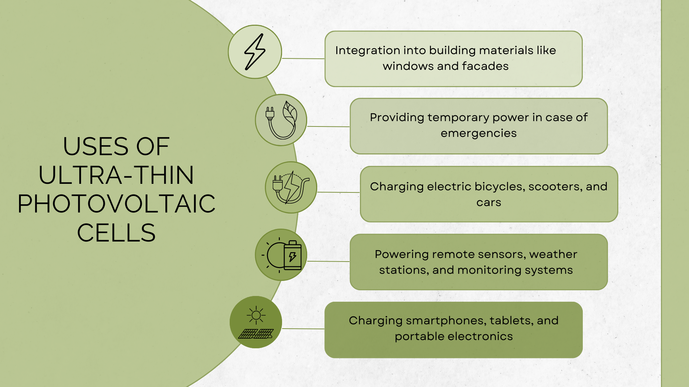

Where can it be used and and can we really afford it?
Few of the endless possibilities of the usage of the cells I already presented on the home page. But there are many more ways to implement the solar cells into daily life. And the best thing is, that we can use it as a private person too! So what actually can you do with it? For that, here is a list with all the possiblities:
| Application | Industry | Private Person |
|---|---|---|
| Portable Devices | Integration into wearable technology, smartwatches, and IoT devices | Charging smartphones, tablets, and portable electronics |
| Building | Integration into building materials like windows and facades | Rooftop solar installations |
| Transportation | Integration into electric vehicles and hybrid cars | Charging electric bicycles, scooters, and cars |
| Outdoor Recreation | Powering camping equipment, backpacks, and portable chargers | Charging outdoor lighting, camping gear, and gadgets |
| Remote Locations | Powering remote sensors, weather stations, and monitoring systems | Providing off-grid power in remote cabins or boats |
| Emergency Power | Backup power during power outages and emergency situations | Providing temporary power in case of emergencies |
The most important benefits and usages at one glance:
Just imagine the possibilities. They could be integrated onto the sails of a boat to provide power while at sea, put onto tents and tarps that are deployed in disaster recovery operations, or applied onto the wings of drones to extend their flying range.
Sadly there is no answer as of yet to either of these questions. Since the discovery is new and, as I said already, they still need to find and make a ultra thin and lightweight weather proof material for the cells and add it to the cells, there aren't any anwswers.
What I do know however is that they know what makes a new solar cell popular on the market: efficiency and cost in dollars-per-watt. But now with the extreamly-thin solar cells. There is a unique element to these cells - the ease of the installation and the portability. It also helps that the efficiency is better than regular solar cells and the manufacturing process is now cheaper than ever bevor. The cost of the weather proof material is still missing, however.
So in conclusion, we have:
This sets the paper-thin solar cells up to be a revolutionary technology on the market and in a few
years, when everything is figured out, the industry will soon mass produce them for everyone - industry
and private person alike.
So be ready, because when it hits, we can be ready for a future with
increased solar cells - one we couldn't have withput this technology!